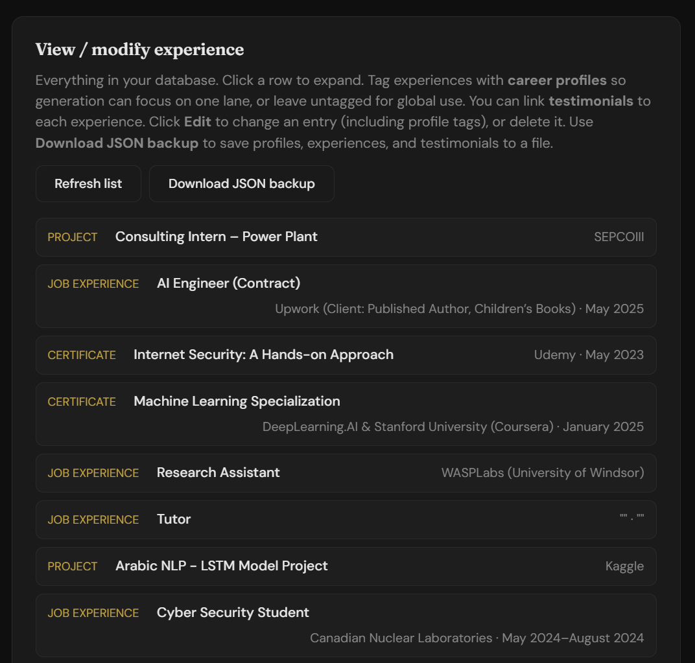
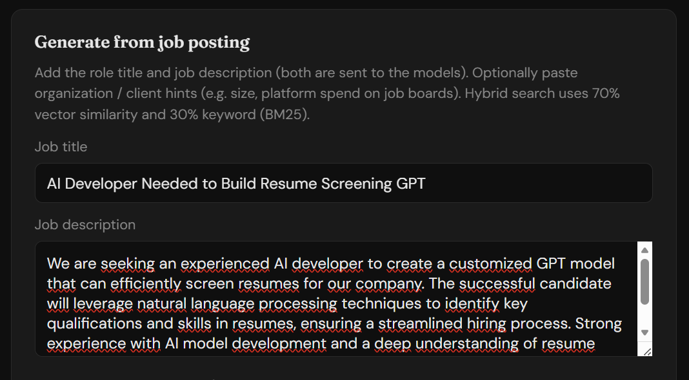
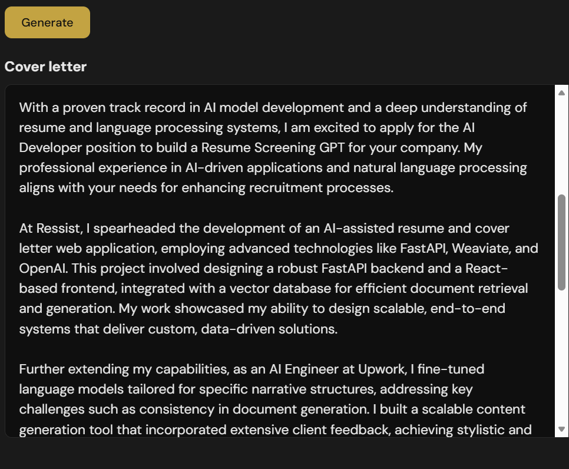

Salman Ayman Youssef · Original work
Ressist — Actual Application Screenshots
A look inside the application I built: career profiles, structured experience, job-specific generation, and an example cover-letter output.
These are captures of the working interface. The cover-letter text is model-generated application output and needs review before use.






